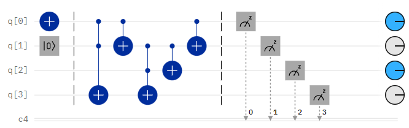
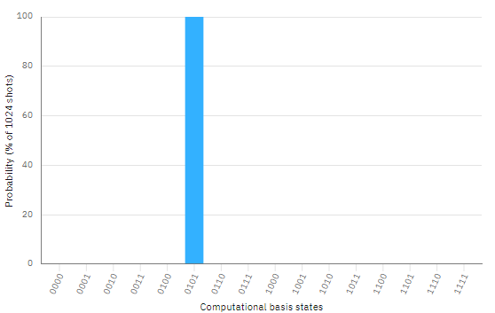
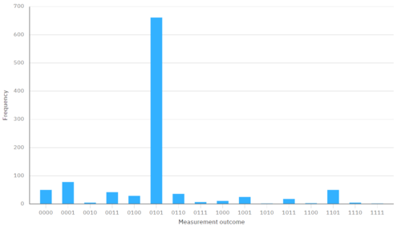
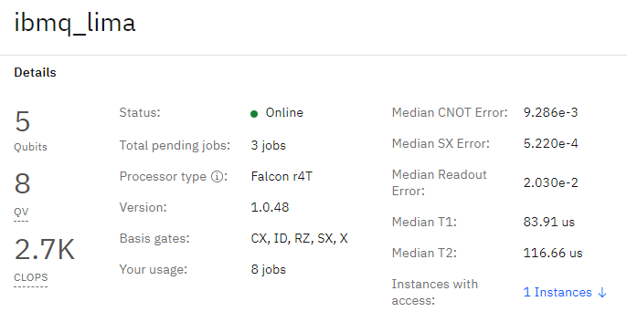

دارة الجمع (Full Adder)
هناك أنواع مختلفة من دوائر الجمع الثنائية مثل دائرة الجمع النصفي half adder ، و دائرة الجمع الكاملة full adder
برمجياً
يمكن بناء دائرة الجمع الكامل في الحاسوب الكمي بأستخدام بعض البوابات الكمية كما سنوضح في المثال التالي .

OPENQASM 2.0;
include "qelib1.inc";
//تعريف مسجل كمومي مكون من 4 كيوبت
qreg q[4];
//تعريف مسجل كلاسيكي من 4 بتات
//من اجل حفظ المخررجات
creg c[4];
//المدخلات
x q[0]; //وضع المدخل الاول في حالة ال 1
reset q[1]; //وضع المدخل الثاني في حالة ال 0
barrier q[0], q[1], q[2], q[3];
//دائرة الجمع
ccx q[0], q[1], q[3];
cx q[0], q[1];
ccx q[1], q[2], q[3];
cx q[1], q[2];
cx q[0], q[1];
barrier q[0], q[1], q[2], q[3];
القياس
measure q[0] -> c[0];
measure q[1] -> c[1];
measure q[2] -> c[2];
measure q[3] -> c[3];
الخطوة الاولى (التعريف)
تعريف مسجل كمومي مكون من 4 كيوبت
qreg q[4];
تعريف مسجل كلاسيكي من 4 بتات من اجل حفظ المخررجات
creg c[4];
الخطوة الثانية (المدخلات)
وضع المدخل الاول(الكيوبت) في حالة ال 1
x q[0];
وضع المدخل الثاني(الكيوبت) في حالة ال 0
reset q[1];
الخطوة الثالثة (بناء دائرة الجمع)
و نستخدم بوابة توفولي (Toffoli gate) او (double controlled-NOT gate (CCX على الكيوبت الاول و الثاني و ثلاث
ccx q[0], q[1], q[3];
في هذه الخطوة نقوم بأضافة بوابة النفي المتحكم CX بين الكيوبت الاول و الكيوبت الثاني
cx q[0], q[1];
و نستخدم بوابة توفولي (Toffoli gate) او (double controlled-NOT gate (CCX على الكيوبت الثاني و الثالث و الرابع
ccx q[1], q[2], q[3];
نقوم ايضا في هذه المرحلة باستخدام بوابة CX والتي تقوم بعملية نفي بين الكيوبت الثاني و الثالث
cx q[1], q[2];
نقوم ايضا في هذه المرحلة باستخدام بوابة CX والتي تقوم بعملية نفي بين الكيوبت الاول و الثاني
cx q[0], q[1];
الخطوة الرابعة (القياس)
تقوم بقياس قيمة الكيوبت و تخزينها في البت الكلاسيكي المقابل
measure q[0] -> c[0];
measure q[1] -> c[1];
measure q[2] -> c[2];
measure q[3] -> c[3];
النتائج
النتيجة المتوقعة نظرياً

النتيجة المرصودة عملياً

الحاسوب الكمي المستخدم في التجربة
